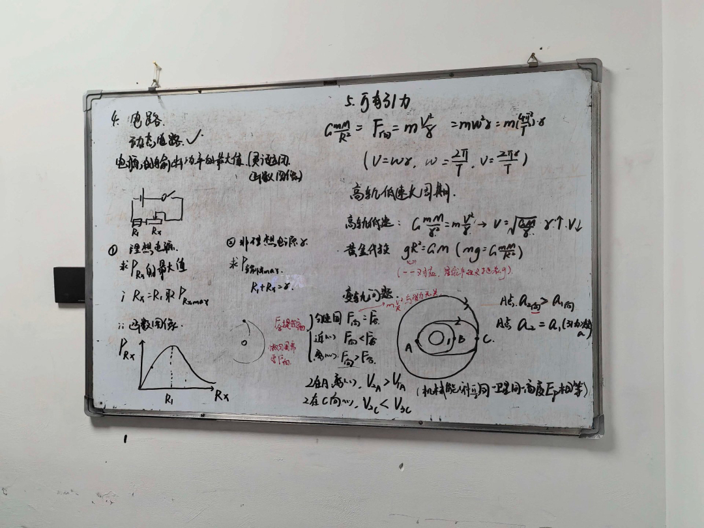

今天给一个高二学生讲期中试卷。他考了 28 分。
拿到这个分数，很多老师的第一反应是「从第 1 题讲到第 15 题」，把每道题怎么做讲一遍。我没有这么做。
因为 28 分这个数字，指向的不是「有几道题不会」，而是一个更根本的事实：底下的骨架，还没搭起来。讲题是往骨架上挂肉，骨架没立住，挂上去也掉下来。
先讲题，还是先搭骨架
这套卷子的压轴题（第 15 题，15 分）很有意思：一个正点电荷 Q，一个竖直向上的匀强电场，一个带电量 q 的微粒在两者作用下做圆周运动；碰撞之后撤掉电场，微粒在库仑力作用下运动——题目明说，这一步「可以类比行星绕中心天体的运动」。
换句话说，这道题把三块东西拧在了一起：静电场、碰撞、天体运动。
如果学生三块里有两块是空的，这道题他根本没法上手。所以 28 分的学生，缺的从来不是「第 15 题怎么解」，而是下面这几样最底下的东西。我这次课，做的就是把它们一块一块重新搭起来。
第一块：电场线，先画对方向
电场是这套卷子的主战场。我问他："电场线怎么画？"他支支吾吾。
这就是起点。电场线不是「随便画几条带箭头的线」，它有两条铁律：
- 方向：沿电场线切线方向，也就是正电荷受力的方向；电场线从高电势指向低电势。
- 大小：看疏密。越密，场强越大。
跟电场线配套的，是等势面——它永远和电场线垂直。这两样画清楚了，后面「电势、电势能、电场力做功」才有落脚的地方。

第二块：单位制，先会算 1N 等于什么
很多人想不到，28 分的学生会卡在单位制上。但这是真的——他分不清基本量和导出量，更没意识到「单位能反推公式」。
我在这块黑板上只写了一件关键的事：
1 N = 1 kg·m/s²
这一个式子，是牛顿第二定律 F = ma 的「单位形态」。很多学生公式会背，单位不会写，结果就是在计算里乱成一团。把单位理顺，等于给后面的每一个计算都铺了路。
第三块：电路功率，那个最容易骗人的最大值
电路题里有个经典坑：什么时候电源输出功率最大？
学生凭直觉会觉得「外阻越大，功率越大」，或者反过来。其实关键在一句话——
外阻等于内阻时，电源输出功率最大（R = r）。
如果只是滑动变阻器自己求最大功率，那是另一回事：把变阻器之外的一切（包括电源内阻）都看作「等效电源」，再套 R = r。
这个「等效」两个字，是学生最缺的那一下。会了，一类的功率极值题就通了。
第四块：万有引力变轨，先分清三种情况
第 15 题后面那步「类比行星运动」，直接考的是万有引力那一套。而万有引力里最绕的，是变轨。

变轨就三种情况，对应合力 F 和向心力 F向 的大小关系：
- F引 = F向：匀速圆周
- F引 > F向：向心，往里掉
- F引 < F向：离心，往外甩
再加一条核心结论——高轨低速、大周期：轨道越高，线速度越小，周期越大。这个「高轨低速」看着反直觉，学生总记反。
还有一个要单独提的：黄金代换 gR² = GM。地面上 mg = GMm/R²，把 R² 移过去就是它。这是「地面」和「天上」之间的一座桥，很多题就靠它把两个场景接起来。
第五块：传送带和分离临界
卷子里还有两类「看起来是力学、其实是模型」的题：传送带，和两物体分离。
传送带的核心，是那个让人头疼的摩擦生热：
Q = f × 相对位移
注意是「相对位移」，不是「对地位移」。而传送带额外消耗的电能，等于摩擦生热加上物体动能的增量、重力势能的增量——能量是要一笔一笔算清楚的。
两物体分离的临界，则干净得多：
分离瞬间，两物体之间的相互作用力刚好为 0，而分离前它们的加速度、速度都相同。

回到那 28 分
把这几块搭完之后，再回头看第 15 题，事情就不一样了。
那道题再难，拆开也就是：电场里受力分析（第一块）、碰撞瞬间的动量处理（前面「力学三把钥匙」里讲过的动量观点）、撤电场后的天体运动类比（第四块）。三块都是「搭过的骨架」，题只是把它们串起来。
所以这节课我真正想记下来的，不是「第 15 题怎么做」，而是这一个判断：
分数越低，越不能急着讲题。先看是哪块地基塌了，把地基补上，题自己就能做了。
留下一个待观察的问题
这套卷子他 28 分，下一套能不能涨，涨多少，我不知道。我能确定的只有一点：如果这五块骨架真的立住了，他至少不会再「看不懂题在考什么」。
至于「立没立住」，要看下次。这不是我讲一遍就能打包票的事。
关于这篇文章
这篇记的是一次真实的高二期中考卷讲解。板书是当场写的，题是学生自己的卷子。文章不逐题讲答案，只讲「面对低分，先补什么」这个教法上的判断。如果你觉得这个角度对你有用，下次我再记一次不同学生的课。